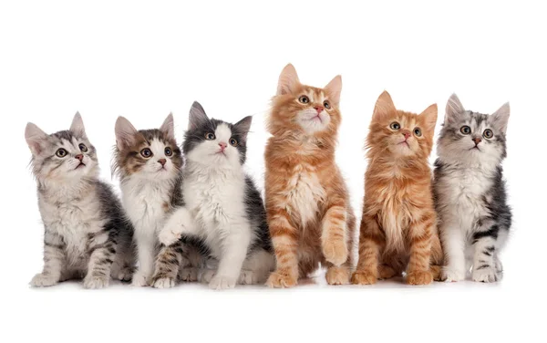
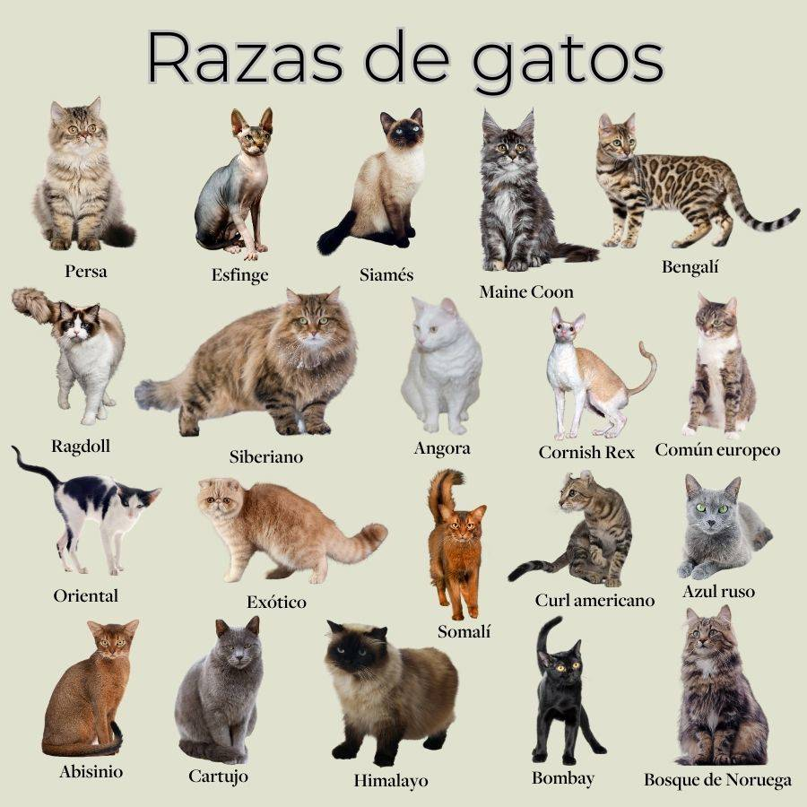

| Inicio | Perros | Gatos | Otros |
🐈EL MUNDO GATUNO🐈

Los gatos han acompañado a los humanos durante miles de años, y aunque muchas veces se dice que son independientes, su vínculo con las personas es innegable. Con su mirada profunda y movimientos sigilosos, estos felinos han conquistado hogares y corazones en todo el mundo.
Desde la antigüedad, los gatos han sido admirados y, en algunas culturas, incluso venerados. En el antiguo Egipto, por ejemplo, se les consideraba criaturas sagradas y eran protegidos con leyes especiales. Su presencia en los hogares no solo era apreciada por su capacidad de cazar ratones, sino también por su aura misteriosa y elegante.
A diferencia de los perros, los gatos suelen ser más reservados y disfrutan de momentos de soledad. Sin embargo, eso no significa que no generen lazos afectivos con sus dueños. Cada gato tiene su propia personalidad: algunos son juguetones y buscan atención constantemente, mientras que otros prefieren la tranquilidad y el descanso en su rincón favorito.
Una de las características más fascinantes de los gatos es su capacidad de adaptación. Son animales extremadamente ágiles y pueden trepar, saltar grandes distancias y moverse con una precisión asombrosa. Su comportamiento también está lleno de pequeños rituales: el famoso "amasado" con sus patas, los ronroneos como señal de bienestar y sus largos estiramientos después de una siesta.
En el mundo hay una gran variedad de razas de gatos, desde el majestuoso Maine Coon hasta el exótico Sphynx sin pelaje. Sin embargo, independientemente de la raza, todos comparten ciertas necesidades esenciales: una alimentación adecuada, estimulación mental y mucho cariño. Aunque sean más independientes, los gatos disfrutan de la compañía de sus dueños y pueden establecer relaciones profundas y afectuosas.
Más allá de su belleza y elegancia, los gatos también han sido objeto de mitos y supersticiones. En algunas culturas, se cree que los gatos negros traen mala suerte, mientras que en otras son considerados símbolos de protección y sabiduría.
Lo cierto es que los gatos, con su comportamiento enigmático y sus expresiones cautivadoras, siguen siendo uno de los animales más queridos y admirados en todo el mundo. Su presencia en un hogar no solo aporta compañía, sino que también llena los espacios de tranquilidad, misterio y amor incondicional.
